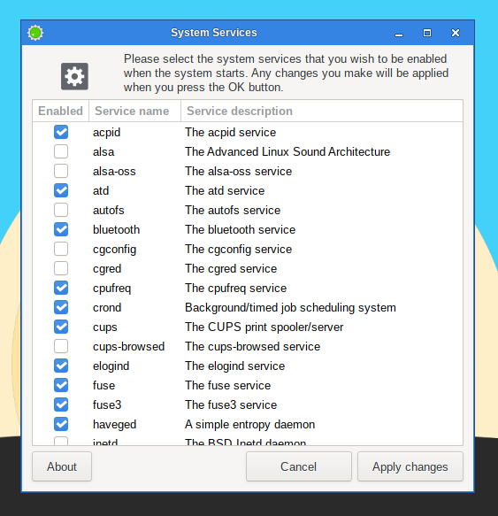

Here you will be able to select the services that should or shouldn't be activated in the background when your system starts.
All your modifications will be applied instantly if you press the OK button and will not necessitate a reboot.
To execute this utility in a terminal, simply type
sudo servicesetup
